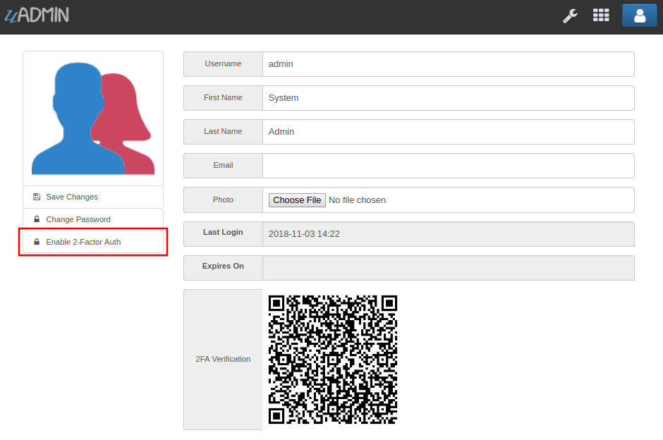

Profile¶
uAdmin has a feature that allows you to customize your own profile. In order to do that, click the profile icon on the top right corner then select admin as highlighted below.

By default, there is no profile photo inserted on the top left corner. If you want to add it in your profile, click the Choose File button to browse the image on your computer.

Once you are done, click Save Changes on the left corner and refresh the webpage to see the output.

No matter what small or large the pixels you upload in your profile, it will automatically resize the photo to static format.
You can also enable two factor authentication in your profile by using Google authenticator. In uAdmin, it uses QR code which is typically used for storing URLs or other information for reading by the camera on a smartphone.
If there is a problem, you may go to your terminal and check the OTP login.